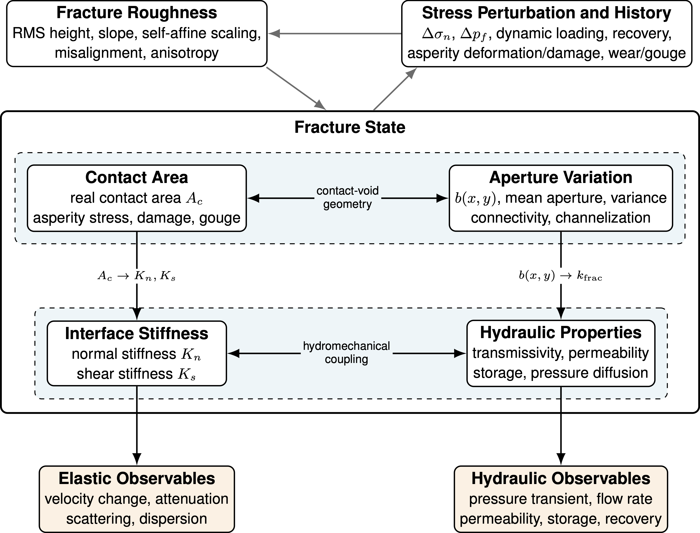
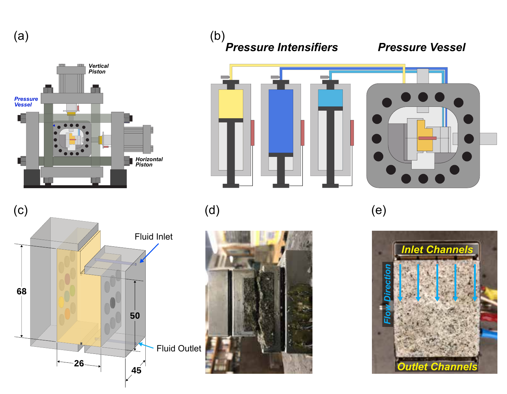
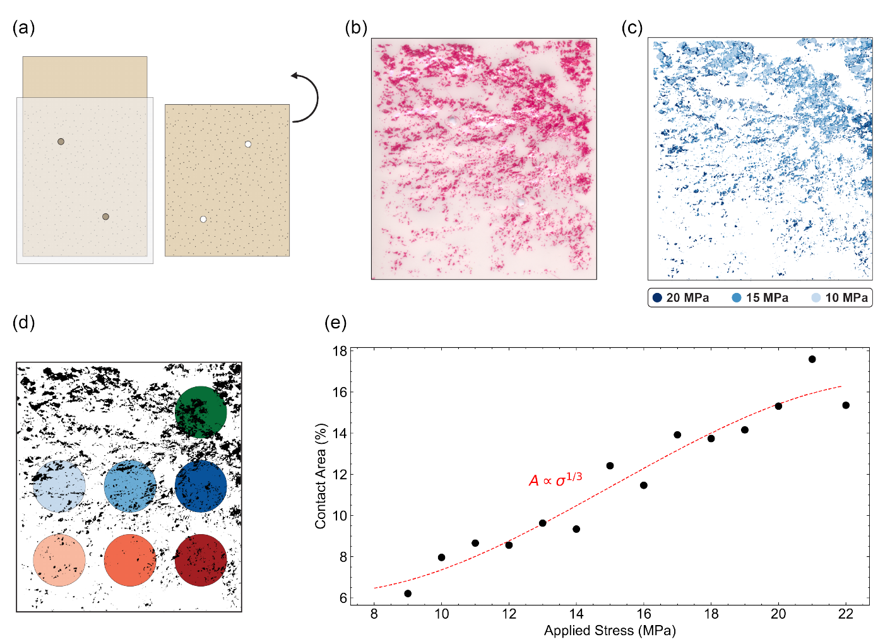
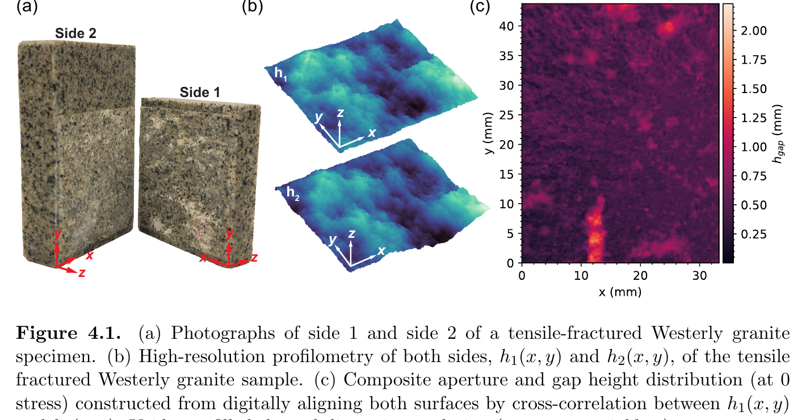
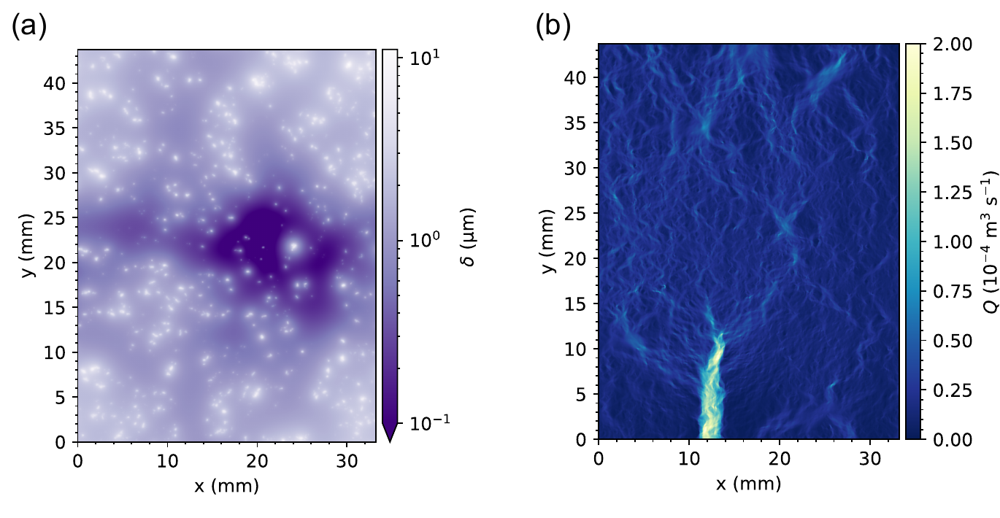
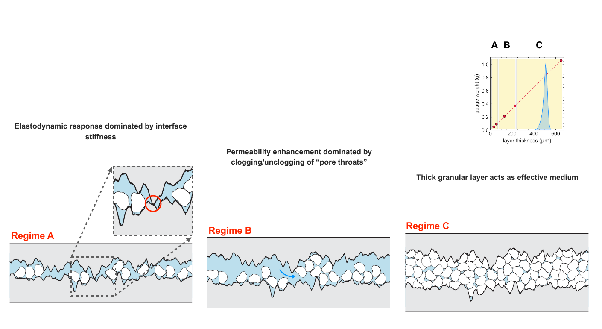

How rough, stressed fractures couple seismic signatures and subsurface fluid flow.
01
Background

Fracture roughness and stress history determine where the two surfaces touch and how much open space remains. Contact area controls stiffness, while connected openings control fluid flow.
Fractures influence how the crust stores stress, transmits seismic waves, and moves fluids. Their open spaces can form pathways for water, gases, and injected fluids, while tightly closed or mineral-filled fractures can impede flow. Earthquakes, fluid injection, carbon storage, wastewater disposal, and energy production disturb the stress and fluid pressure around these fractures. Even small disturbances can change the width of a fracture, the points where its walls touch, and the arrangement of loose particles inside it.
Field studies have recorded sudden decreases in seismic-wave speed during earthquakes, gradual recovery after shaking ends, and changes in the flow of groundwater and other subsurface fluids. These observations suggest that fracture stiffness and permeability evolve together, but the underlying connection remains difficult to measure. My dissertation investigates this connection by recreating shallow-crust conditions in the laboratory. I loaded water-saturated fractures in Westerly granite, applied controlled oscillations in stress and fluid pressure, measured fluid flow, and sent ultrasonic pulses across the fractures. I combined these measurements with maps of the true contact area, micrometer-scale scans of fracture roughness, and numerical models built from the measured surfaces. This approach reveals how fracture geometry produces the acoustic and hydraulic signals observed in the laboratory and, potentially, in the crust.
02
Questions driving this work
How do a fracture’s permeability and nonlinear elastic response evolve as the fracture forms and undergoes shear?
How do normal stress, aperture, and real contact area control changes in fluid flow and ultrasonic-wave speed during dynamic stressing?
How does measured fracture roughness govern deformation, stiffness, contact formation, and channelized fluid flow?
Can relationships observed in centimeter-scale laboratory samples help explain fractured rock at greater depths and larger scales?
How do crushed rock particles, called gouge, interact with surface roughness to control fracture stiffness and permeability?
When does fluid-pressure oscillation move gouge through a fracture, and when does a thick gouge layer control the entire response?
03
Highlights
Geologic motivation and research framework
The opening study connects the laboratory work to earthquakes and industrial activity in the subsurface. Both seismic waves and changes in fluid pressure can disturb fractures, alter their stiffness, and change their ability to transmit fluid. It identifies roughness, aperture, contact area, and gouge as the geometric features that connect elastic behavior with fluid flow. It also introduces the central idea that acoustic measurements may reveal the hydraulic condition of a fracture because both signals depend on the same evolving interface.

Figure 2.1. The experimental system loads a water-saturated granite fracture while measuring fluid flow and transmitting ultrasonic waves across the interface.
Dynamic stressing and shear of newly formed fractures
This study examines fractures created inside Westerly granite while the specimens remained under triaxial stress. Water flowed through each fracture as arrays of ultrasonic sensors monitored its elastic response. I disturbed the fracture with oscillations in normal stress and pore pressure, then sheared it in stages and repeated the measurements. Dynamic stressing caused transient elastic softening, fluctuations in wave speed, permeability changes, and gradual recovery. Larger perturbations generally produced stronger responses. Pore-pressure oscillations enhanced permeability more effectively than normal-stress oscillations. Progressive shear rearranged the contacting high points, widened some openings, closed others, and generated gouge. These changes weakened the relationship between acoustic response and permeability and revealed strong spatial variation across the fracture.

Figure 3.2. Pressure-sensitive film maps the points where the fracture walls touch. Increasing stress enlarges these contacts and closes open flow paths.
Aperture, contact area, and applied stress
This study isolates the effects of fracture closure and real contact area. I split a granite specimen in tension, reassembled the two rough surfaces, and measured its response at effective normal stresses between 10 and 20 megapascals. Pressure-sensitive films recorded where the surfaces touched, while numerical calculations identified the part of the fracture sampled by each pair of ultrasonic sensors. Increasing stress enlarged the real contact area, reduced the open aperture, and decreased permeability. It also reduced the fracture's nonlinear elastic response, especially in regions with extensive contact. Regions with less initial contact responded more strongly to pressure oscillations. This work directly connects a local acoustic measurement to the physical contact structure within the same part of the fracture.
Modeling measured fracture roughness
This study uses micrometer-scale scans of both fracture surfaces to build a three-dimensional representation of the aperture. I digitally aligned the surfaces, calculated how their high points deformed under load, and solved for water flow through the remaining connected openings. Pressure-sensitive films provided an experimental check on the modeled contact distribution. The model captured the relative reduction in flow as stress increased and showed that most deformation occurred at small, highly stressed contact points. It also showed that water traveled through a branching network of channels around those contacts. Small offsets between the opposing surfaces changed the flow rate dramatically, demonstrating that fracture alignment and shear history can exert as much influence as mean aperture. Differences between modeled and measured absolute flow identified processes for future models to include, such as asperity damage, friction, and permanent deformation.

Figure 4.1. Photographs, measured surface topography, and the digitally reconstructed fracture aperture.

Figure 4.4. Micrometer-scale deformation at contact points produces a branching network of connected flow channels.

Figure C.1. The response changes as the gouge layer thickens: rough contacts control thin layers, mobile grains dominate intermediate layers, and thick gouge behaves as a granular medium.
Fracture roughness and granular gouge
This study separates the effects of roughness and granular fill. I prepared planar granite fractures with similar roughness and added controlled amounts of fine quartz powder to represent gouge produced by wear and shear. Every experiment used the same stress, fluid-flow conditions, and pressure-oscillation sequence. Thin gouge layers left many rock contacts active. Intermediate layers filled open spaces while allowing grains to move, jam, and escape from narrow flow paths. These layers produced the largest permeability enhancement and nonlinear acoustic response. Thick gouge layers separated much of the rock surface and caused the granular material to control the fracture's mechanical and hydraulic behavior. These observations define three regimes based on gouge thickness relative to fracture roughness and aperture.
Synthesis and broader implications
The final synthesis brings the experiments and models into a common framework. Fracture roughness and stress history set the evolving distribution of contacts and openings. Contact area controls interface stiffness and acoustic transmission, while the connected aperture controls fluid flow. Shear, damage, and gouge modify both parts of this system. The resulting framework explains why acoustic and hydraulic measurements often change together during dynamic stressing. It also provides a path for using seismic observations to infer changes in fracture permeability at larger scales.
04
Results
Fractures softened, ultrasonic-wave speeds fluctuated, permeability changed, and both properties gradually recovered after the disturbance ended. These responses resemble seismic softening, post-seismic recovery, and groundwater changes observed around earthquakes.
Larger-amplitude and higher-frequency perturbations generally produced stronger changes. Pore-pressure oscillations caused the greatest permeability enhancement because they acted directly on the fluid and could move particles through narrow flow paths.
Higher stress closed the fracture, enlarged its real contact area, and reduced both permeability enhancement and nonlinear elasticity. Within the same fracture, regions with less contact area showed stronger changes in ultrasonic-wave speed.
Different ultrasonic paths recorded different responses at the same applied stress. This variation reflected the uneven distribution of contacting high points, open voids, and gouge across the fracture.
Progressive shear rearranged contacts and generated wear material. It usually reduced the changes in wave speed and permeability, although the evolving gouge could also clog, reopen, or redirect individual flow paths.
Models built from the measured surfaces showed that offsets smaller than one millimeter could increase the simulated flow rate by as much as 500 percent. This sensitivity helps explain the large hydraulic changes that accompany small amounts of shear.
Across five orders of magnitude in applied stress and a wide range of rock stiffnesses, simulated fluid flow scaled with fracture compliance, which describes how easily the interface deforms.
Bare and lightly filled fractures remained controlled by rock-to-rock contacts. Intermediate gouge layers produced the greatest particle movement, permeability enhancement, and acoustic response. Thick layers behaved as granular media and reduced the influence of the rough rock surfaces.
05
Future directions
Test the framework at field scale. Combine dense seismic arrays with pressure and flow records around active faults, injection wells, geothermal systems, and underground storage sites.
Measure gouge transport directly. Collect particles at the fracture outlet and measure their number, size, shape, and mineral composition to distinguish particle movement from contact deformation and aperture change.
Explore a wider range of granular materials. Vary grain size, shape, mineralogy, and layer thickness to test how the three gouge regimes depend on the ratio between particle diameter and fracture aperture.
Track roughness and contact area during shear. Repeat surface scans and contact maps after controlled shear increments to reveal how individual high points break, move, and reform.
Add chemical reactions and temperature. Use saline water, carbon-rich fluids, reactive minerals, higher temperatures, and longer experiments to examine dissolution, precipitation, pressure solution, and sealing.
Expand the numerical physics. Include friction, permanent asperity deformation, grain breakage, transient fluid flow, and explicit particle transport.
Move from single fractures to fracture networks. Study intersecting fractures with different orientations, roughnesses, and stress histories to connect local changes with reservoir- and fault-zone behavior.
Investigate scaling more directly. Test larger specimens, additional rock types, and broader stress conditions to identify relationships that persist from laboratory fractures to natural faults.